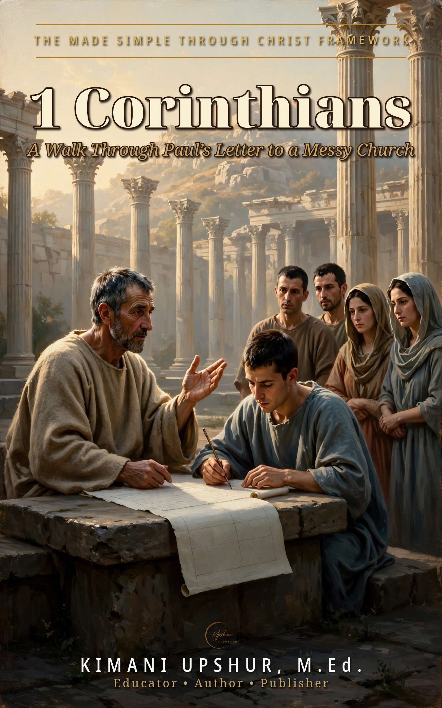

Home / Books / Bible People & Stories

1 Corinthians
by Kimani Upshur, M.Ed.
Corinth was a wealthy port city famous for two things: commerce and corruption. Paul stayed eighteen months, a church was born — and within a few years it had every problem a church can have: factions splitting over favorite leaders, members suing each other in pagan courts, sexual immorality tolerated in the congregation, confusion about marriage and singleness, arguments about food sacrificed to idols, chaotic worship services, and people denying the resurrection itself. So Paul wrote them a letter — the longest, most practical, most wide-ranging of his epistles. It reads less like a theology textbook and more like a pastor's emergency visit: direct, tender, sometimes sharp, always aimed at making a messy church holy. This walk through the letter is built on three words, the book's heartbeat from the Introduction to the final charge: Unite. Love. Rise. Unite — the opening movement takes on division head-on: stop splitting the church, embrace God's wisdom over the world's, build on the only foundation that holds, and live holy in an unholy culture. Love — the center of the letter beats with it: God's design for marriage and singleness, freedom governed by love instead of rights, the Table of the Lord, and every spiritual gift given for the common good. Rise — the climb to the summit: the love chapter, order in worship that edifies instead of confusing, Christ risen as the firstfruits of those who sleep, and Paul's closing charge to finish faithful — watchful, firm, courageous, strong, and in all things loving. Twelve chapters follow the letter itself, passage by passage. Read the Scripture first and let Paul speak; then read the chapter, which opens with the text, answers to it, and closes with “Your move this week” — three concrete steps that turn a reading into a practice. Twelve days from the first page, you will know this letter — its rebukes, its tenderness, and its resurrection triumph — and the God who inspired it far better than you do today. Corinth's problems have contemporary addresses: celebrity-pastor factions, anything-goes morality, worship as spectacle, believers doubting the resurrection. If the gospel could take root in Corinth, it can take root anywhere. This letter was written, by the Spirit's design, for messy churches in every age — including yours. Scripture quotations are from the English Standard Version (ESV) of the Bible. Written from a Christian worldview — Scripture first.
- Publisher
- Upshur Unlimited, LLC
- Author
- Kimani Upshur, M.Ed.
- Format
- Ebook
- List Price
- $4.99 USD
- Language
- English
Readers Also Browse
More Bible People & Stories titles.